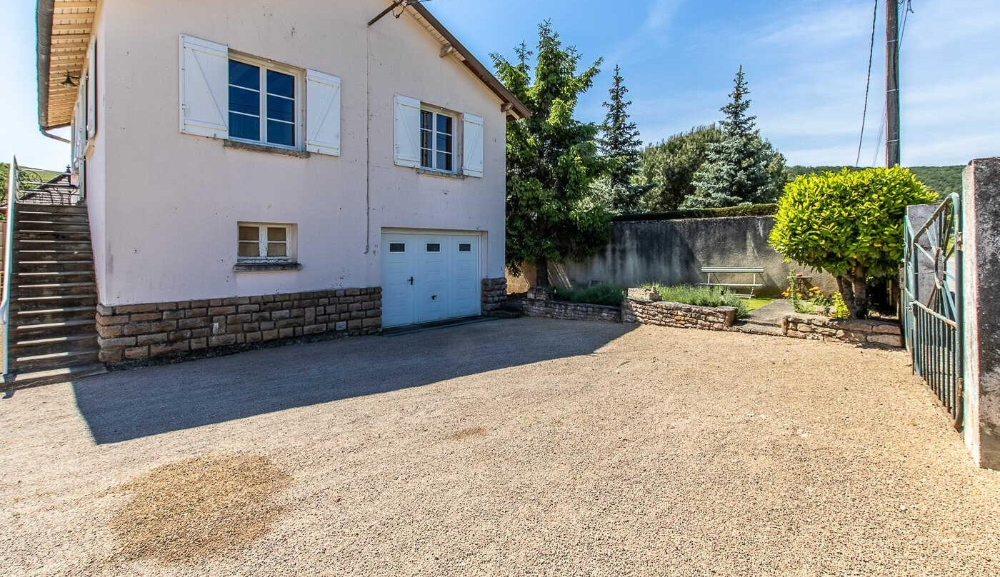

Sophie vous répond
« Gîte très bien situé et pratique. Flexibilité du propriétaire pour une arrivée tardive. Très bon petit déjeuner. Merci pour tout ça ! »
Avant de réserver
Comment réserver ?
En ligne, avec le bouton « Réserver » : vous choisissez vos dates sur le planning, une chambre ou la maison entière : le prix du séjour s’affiche aussitôt, taxe de séjour comprise. Vous pouvez aussi appeler Sophie au 06 08 31 56 79.
Le petit déjeuner est-il compris ?
Oui. Sophie vous apporte le matin un petit déjeuner copieux, que vous prenez à la table de la pièce de vie réservée aux hôtes. Pour un séjour à la semaine, il se règle à part : demandez à Sophie.
Peut-on louer toute la maison ?
Oui : la maison entière (les deux chambres, la mezzanine et la pièce de vie) se loue 230 € la nuit, de 4 à 6 personnes, petits déjeuners compris. Pour un séjour à la semaine ou les deux chambres sur plusieurs nuits, Sophie propose un tarif préférentiel : appelez-la.
Peut-on venir avec des enfants ?
Oui. Sous le toit, par un escalier en colimaçon, la mezzanine de 35 m² accueille deux enfants pour 20 € la nuit, petit déjeuner compris. Elle se loue avec une chambre : précisez-le à Sophie en réservant.
Les animaux sont-ils acceptés ?
Oui, votre animal de compagnie est le bienvenu, avec un supplément de 5 €.
Peut-on visiter le domaine ?
Sophie est vigneronne : la maison est sur le petit domaine familial qu’elle cultive en bio avec son mari. Une visite et une dégustation sont possibles sur demande, pendant votre séjour.
Et à vélo ?
Un local à vélos fermé vous attend, avec le parking privé. La Voie Verte de la Grande Boucle de Bourgogne du Sud passe à 3,5 km et la Voie Bleue, le long de la Saône, à 9 km.
À Fuissé, en Saône-et-Loire
- En TGVgare Mâcon-Loché à 6 minutes en voiture
- Depuis Mâcon8,7 km, environ 13 minutes
- Depuis Lyon74 km, environ 1 heure par l’A6
- Depuis Beaune96 km, environ 1 h 05
- Depuis Paris406 km par l’A6, sortie à 5,5 km de la maison
Bon à savoir
- Ouvert toute l’annéeArrivée tardive possible : prévenez Sophie
- Parking privéEt un local fermé pour les vélos et les motos
- Animaux acceptésAvec un supplément de 5 €
- Français, anglais, allemandPaiement par carte bancaire ou chèques-vacances